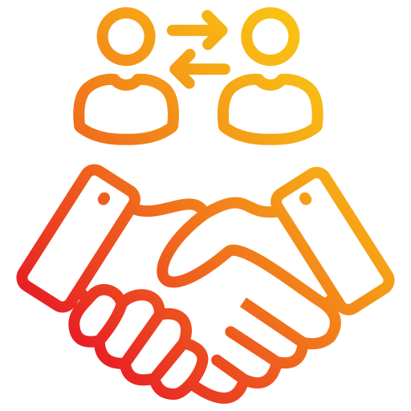
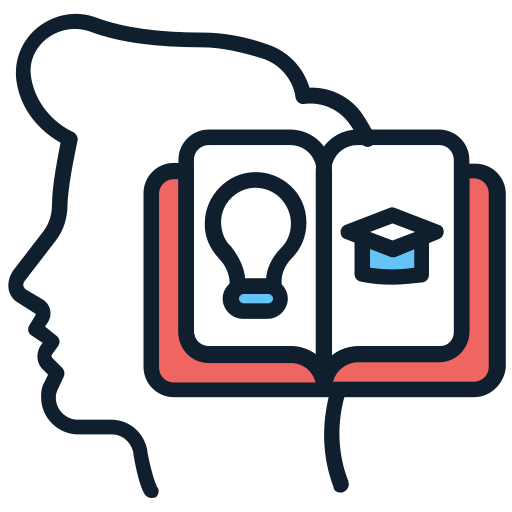
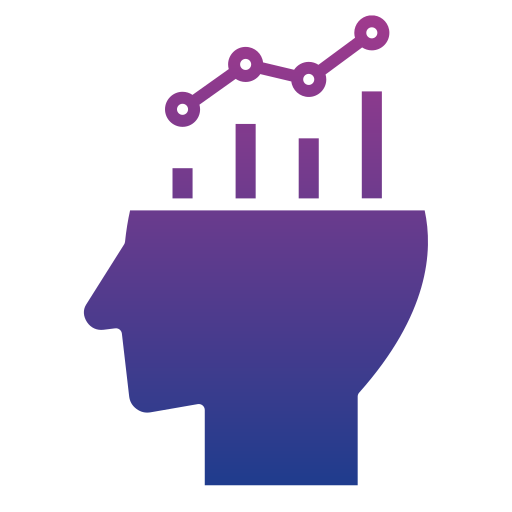
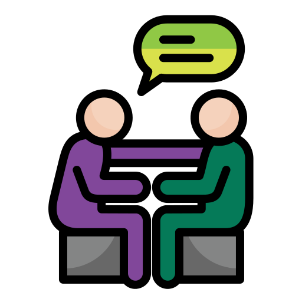
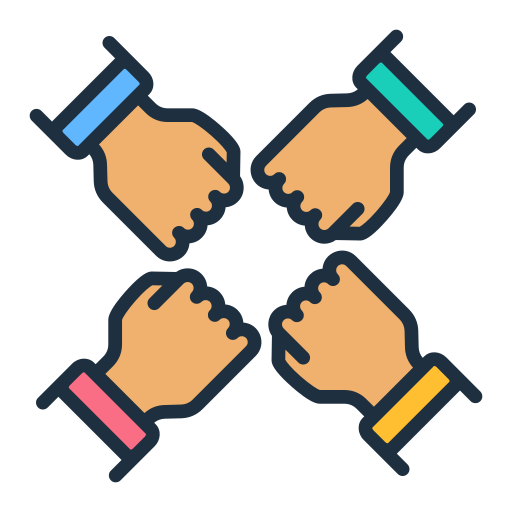
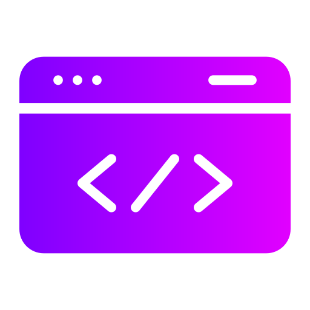
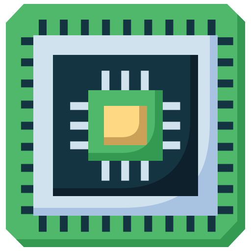
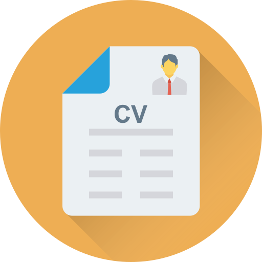

À propos
Je m'appelle Samir ZIANI, issu d'une formation initiale en économie gestion, je suis actuellement en reconversion profesionnelle dans l'informatique, étudiant en BTS SIO (Services Informatiques aux Organisations) à l'école IFIDE Sup-Formation à Strasbourg. Passionné par le développement web et la gestion de projets informatiques, je suis constamment à la recherche de nouvelles opportunités pour apprendre et évoluer dans le domaine de l'informatique.
Soft Skills
 Capacité d'adaptation
Capacité d'adaptation-  Créatif
-  Autodidacte
-  Esprit analytique
-  Force de persuasion
-  Travail en équipe
Technologies
-  HTML et CSS
 JavaScript, MySQL
JavaScript, MySQL
 Windows, migration
Windows, migration-  Montage ordinateur, câblage
Réalisations
Création de mon Portfolio en 2025 avec HTML et CSS
Virtualisation d'un serveur et configuration d'un environnement Active Directory
Contact
Vous pouvez me contacter ou consulter mes profils :
Vous pouvez aussi m’envoyer un mail directement en cliquant ici.
Mon CV
Vous pouvez télécharger mon CV en cliquant sur l'icône ci-dessus